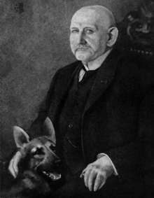

Saksanpaimenkoiran Historia
Saksanpaimenkoira on yksi maailman tunnetuimmista ja monipuolisimmista koiraroduista. Rodun alkuperämaa on Saksa.
Rodun loi saksalainen ratsuväen upseeri Max von Stephanitz 1800-luvun lopussa. Hänen intohimonsa oli luoda monikäyttöinen työkoira, joka olisi omistautunut, älykäs ja fyysisesti vahva.
Stephanitzin visioon kuului jalostaa saksalaisista paimenkoirista yhtenäinen ja voimakas rotu, joka voisi toimia niin karjavartijana kuin palvelus- ja pelastuskoirana. Hän uskoi saksalaisen paimenkoiran luontaisiin kykyihin ja älykkyyteen, tämä luottamus ohjasi hänen jalostustyötään.
Aluksi Saksanpaimenkoirat olivat pitkäkarvaisia ja ne esiteltiin ensimmäisen kerran Hannoverin koiranäyttelyssä 1882. Lyhytkarvainen Saksanpaimenkoira esiteltiin vuonna 1889 Berliinissä. Vuonna 1899 Berliinissä perustettiin rotuyhdistys Verein für Deutsche Schäferhunde, ja ensimmäinen Saksassa rekisteröity yksilö oli Honrad von Grafraht.
Rodun suosio kasvoi nopeasti ensimmäisen maailmansodan aikana, kun brittiläiset ja amerikkalaiset sotilaat ihastuivat Saksanpaimenkoiran monipuolisiin taitoihin. He toivat näitä koiria mukanaan kotimaahansa ja tämän jälkeen Saksanpaimenkoirasta tuli suosittu lemmikki, sekä työkoira ympäri maailmaa. Suomeen ensimmäiset Saksanpaimenkoirat tulivat 1910-luvulla viranomaiskäyttöön.
Saksanpaimenkoira on säilyttänyt maineensa monipuolisena ja älykkäänä koirana nykypäivään asti. Rodun alkuperäiset yksilöt olivat kevytrakenteisempia kuin nykyiset linjat, sekä koirien selkälinja on muuttunut rodun kehityshistorian aikana.
Rodun käyttötarkoitus
Saksanpaimenkoira soveltuu kaikkiin palveluskoirakoelajeihin ja on suosittu rotu viranomaiskäytössä monipuolisuutensa, sekä säänkestävyytensä ansiosta. Saksanpaimenkoira osoittaa erityistä luontevuutta jäljestyksessä eli jäljessä ja tätä lajia voi harjoittaa niin pellolla kuin metsässäkin. Hakukoira keskittyy lähinnä henkilöhakuun tietyltä alueelta metsässä, ja siltä vaaditaan vilkkautta sekä temperamenttia. Viesti on koirien nopeus- ja luotettavuuslaji ja tarjoaa mainion perheharrastuksen, sillä koiran on toimittava maastossa kahden oh